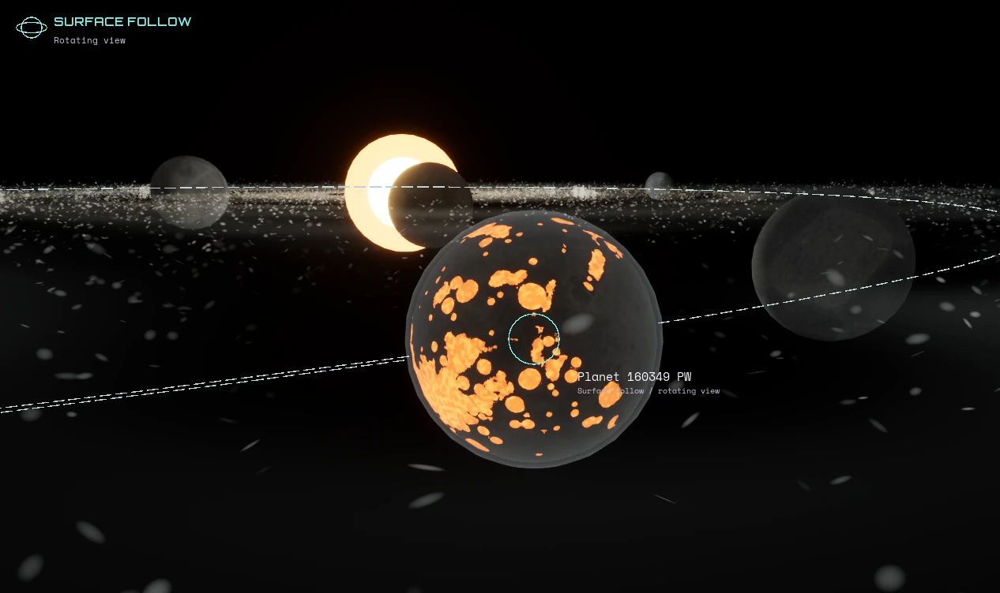
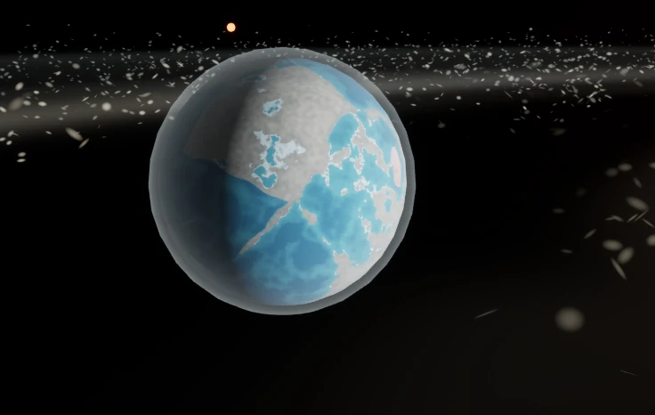
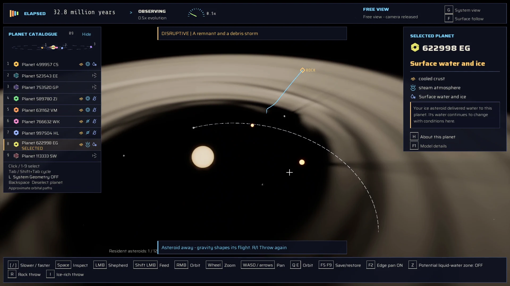
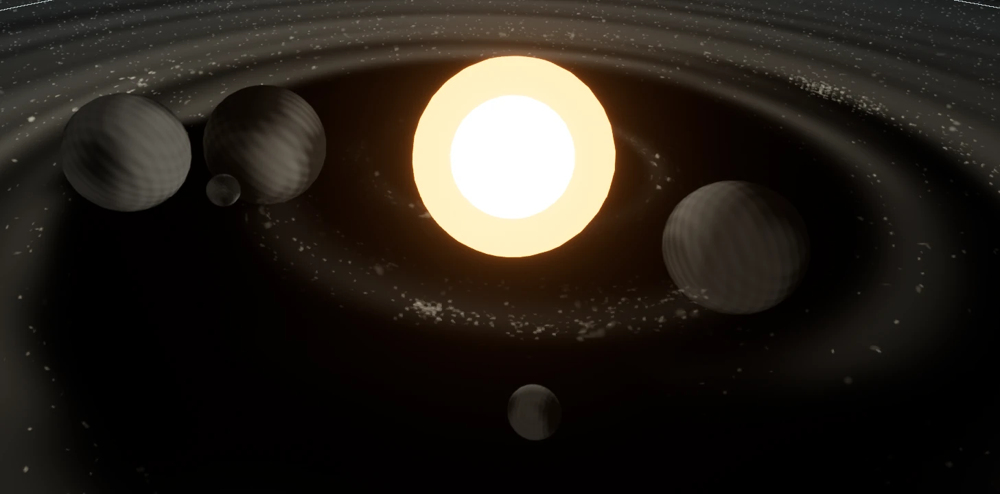
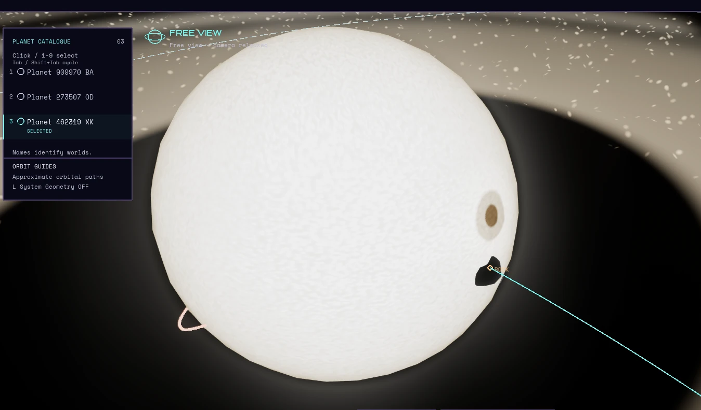
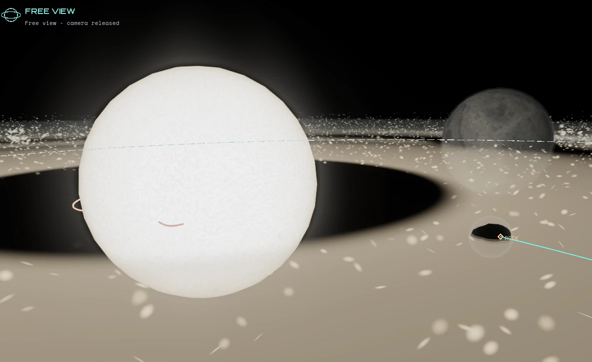
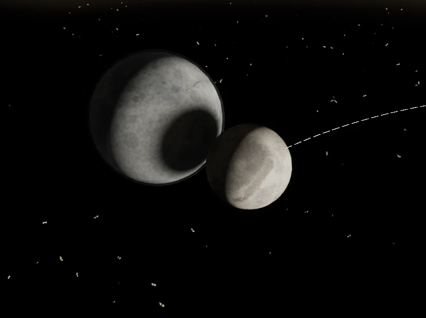
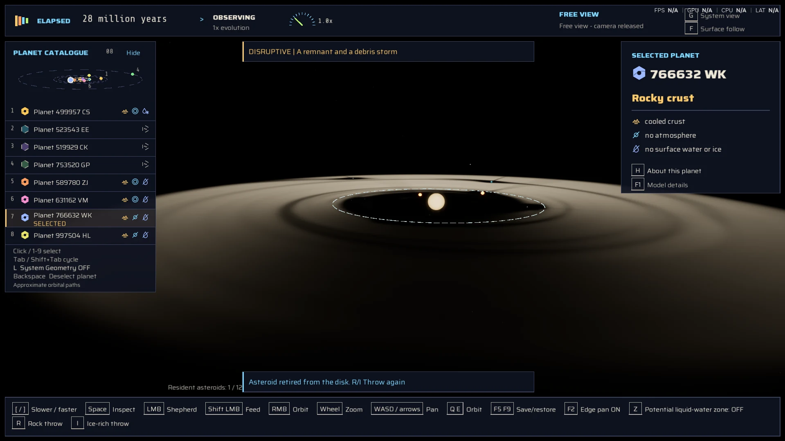
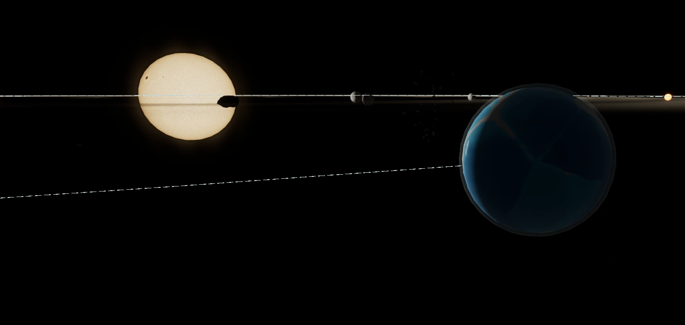
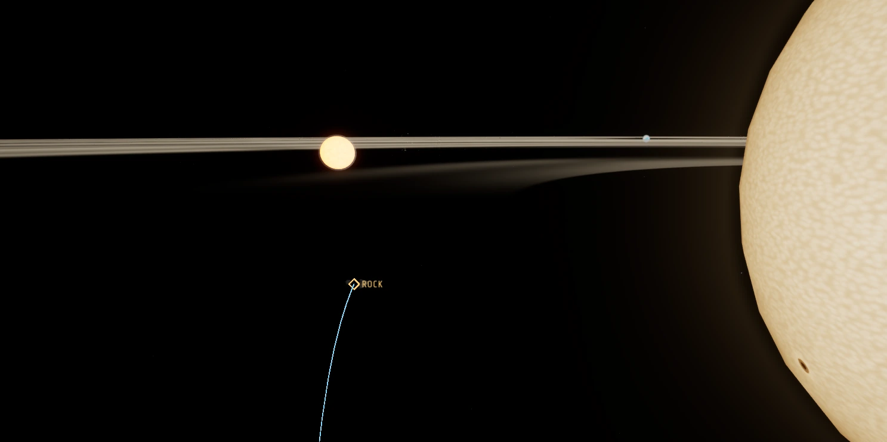

A young star, a ring of dust, and you.
ScrollEvery star starts out messy
Young stars sit inside a flat, spinning disc of gas and dust. The Sun did too, about 4.6 billion years ago. Nearly everything orbiting it today came out of that disc.
That's where Star Shepherd starts. You get one star, one disc and a fixed amount of material. No more is coming, so every world you build is made out of something else.
Shape. Don't place.
Gather dust, nudge orbits and lean on the disc until it starts to clump.
There's no menu of ready-made planets. Gravity does the building, and your job is to make it more likely. Push too hard and the dust scatters. Push gently in the right spot and it starts pulling together.
Think sheepdog, with orbital mechanics.
Gravity keeps the books
Clumps turn into planetesimals, planetesimals into young worlds, and then the worlds start getting in each other's way. Three pieces of classical physics shaped how we think about it:
When things collide, the motion gets shared between the bodies and the debris. The total momentum doesn't change.
Hit twice as fast and there's four times the energy in the collision.
Double the distance between two masses and the pull between them drops to a quarter.
These are the ideas behind our collision research. They don't describe how the game's solver works.
Young systems are crowded and orbits cross. When two worlds hit, the total momentum survives. Not much else does.
In the prototype, collisions happen where the visible surfaces touch, and a near miss stays a near miss. Whatever's left afterwards is still yours to work with.
Then the worlds cool down
Molten patches crust over. An atmosphere starts to form, and water might collect. The prototype already forms hot young worlds and lets them cool. The work now is making each change readable, so you can see why a world changed and which of your nudges did it.


Screenshots from the prototype, not concept art.
Or just throw a rock at it
You can throw asteroids and icy comets into the system. Aim to miss and they miss. They won't curve toward a planet they were never going to hit. Aim well and they won't miss.
Ice grows a tail that gets brighter as the comet falls toward the star and fades after it's gone. Get too close to the star and the comet is gone from the disc for good.

The habitable zone
Turn on the habitable-zone view and a band appears around the star. It marks the distances where liquid water could last on a planet's surface.
That's all it tells you. A world inside the band can still be dead rock. Being in the zone doesn't mean anything will ever live there.
From dust to galaxy in 45 seconds
From the build
Screenshots from the prototype in date order. Work in progress, not concept art. Each one is from a different playtest.

6 Oct 2026
22 Oct 2026
22 Oct 2026
26 Oct 2026
27 Oct 2026
28 Oct 2026
28 Oct 2026